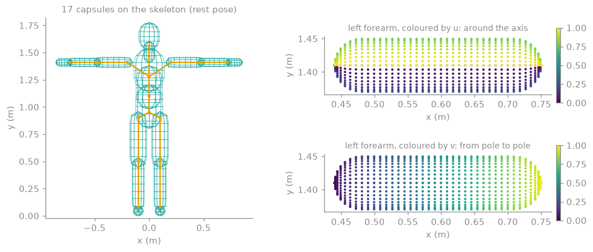
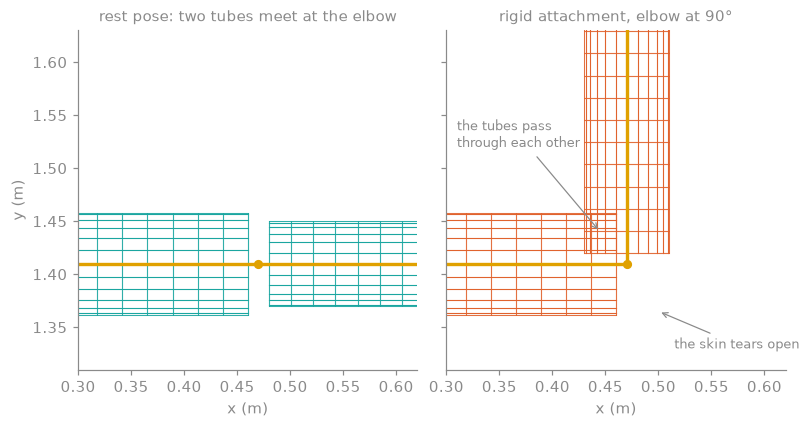
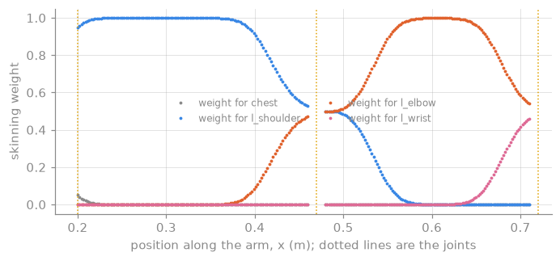
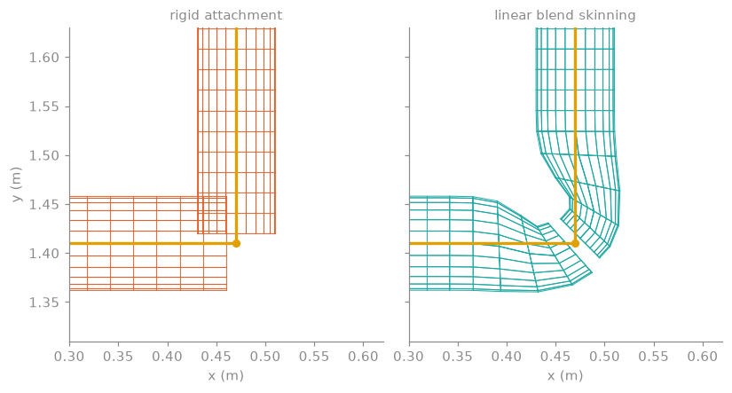
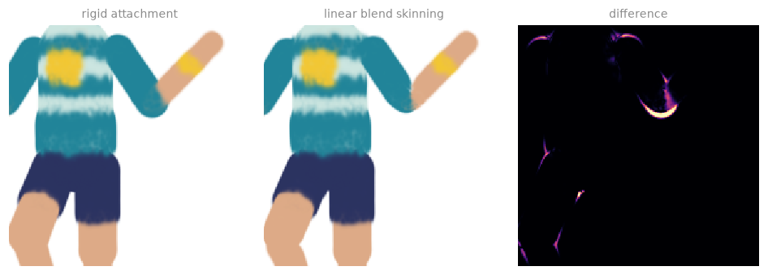
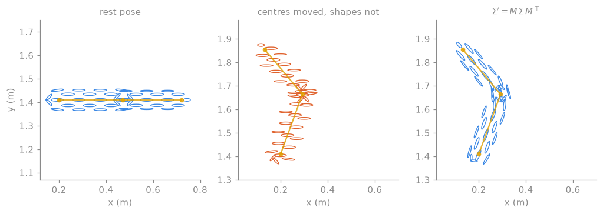
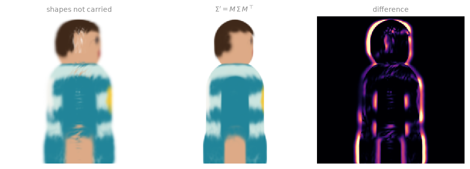
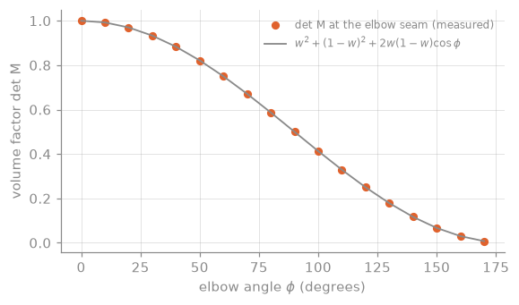
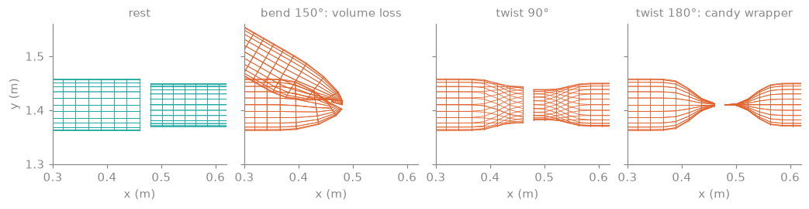

Skinning: making a surface follow the skeleton#
What you will learn
How the toy body’s surface is built from capsules, and what its \((u, v)\) coordinates are.
Why attaching every surface point to one bone breaks the skin at the joints.
Linear blend skinning: \(x' = \sum_j w_j A_j x\), and what the weights must satisfy.
What a Gaussian needs beyond a moved centre: its covariance transforms as \(\Sigma' = M \Sigma M^\top\).
Where linear blend skinning fails (volume loss, the candy wrapper), and what a learned body model such as SMPL adds.
Prerequisites: Lesson 3a (forward kinematics, the transforms \(G_j\)) and Lesson 2b (the covariance of a 3D Gaussian).
A skeleton is seventeen points. A person is a surface. This lesson attaches one to the other, and then asks the question that matters for this course: when the surface is covered with Gaussians, what exactly has to move?
1. The template surface: capsules with \((u, v)\) coordinates#
The toy body has 17 parts. Each part is a capsule: a cylinder with a half sphere on each end, placed along
a bone in the rest pose. cu.PARTS lists them with the joint that drives each one.
Every point on a capsule has two surface coordinates. \(u \in [0, 1)\) runs around the axis. \(v \in [0, 1]\) runs
along the capsule from the pole of one cap to the pole of the other. cu.capsule_surface(part, u, v) turns
them into a 3D point in the rest pose, together with the outward normal and two tangent directions.
for name, joint, a, b, r in cu.PARTS[:3] + cu.PARTS[5:7]:
print(f"{name:<11s} follows joint {joint:<11s} axis from {a} to {b}, radius {100 * r:.1f} cm")
print(f"... {cu.N_PARTS} parts in total")
grid, part_index, u, v = teaching.part_grid("l_forearm", n_u=40, n_v=40) # a (v, u) grid of surface points
points, normals, tan_u, tan_v = cu.capsule_surface(cu.part_index("l_forearm"), u.reshape(-1), v.reshape(-1))
print("capsule_surface returns points", tuple(points.shape), "normals", tuple(normals.shape),
"and tangents along u and v")
assert torch.allclose(normals.norm(dim=-1), torch.ones(len(normals)), atol=1e-5)
assert (normals * tan_u).sum(-1).abs().max() < 1e-5 and (normals * tan_v).sum(-1).abs().max() < 1e-5
pelvis follows joint pelvis axis from (0.0, 0.93, 0.0) to (0.0, 1.08, 0.0), radius 12.5 cm
abdomen follows joint spine axis from (0.0, 1.1, 0.0) to (0.0, 1.26, 0.0), radius 12.0 cm
chest follows joint chest axis from (0.0, 1.28, 0.0) to (0.0, 1.4, 0.0), radius 14.0 cm
l_upperarm follows joint l_shoulder axis from (0.2, 1.41, 0.0) to (0.46, 1.41, 0.0), radius 4.8 cm
l_forearm follows joint l_elbow axis from (0.48, 1.41, 0.0) to (0.71, 1.41, 0.0), radius 4.0 cm
... 17 parts in total
capsule_surface returns points (1600, 3) normals (1600, 3) and tangents along u and v

The \((u, v)\) coordinates are the address system of the body. A colour stored “at part 6, \(u = 0.3\), \(v = 0.5\)” names the same spot of skin in every pose. Part 4 stores the whole appearance of the avatar in images indexed by \((u, v)\). A real body model has the same thing: a mesh with a UV map.
The capsules are a stand-in. They overlap at the joints instead of forming one continuous skin, and a real body is not made of cylinders. What they share with a real template is everything this lesson needs: a rest pose, surface coordinates, and a bone for every point.
2. Rigid attachment, and where it breaks#
The simplest rule: every surface point belongs to one bone and moves with it. From Lesson 3a, joint \(j\) has a world transform \(G_j\) that maps coordinates in the joint’s frame to the world. A rest-pose point \(x\) is given in world coordinates, so first express it in the joint’s rest frame (apply \(G_j^{\text{rest}\,-1}\)), then send it to the posed world:
\(A_j\) is the skinning transform of joint \(j\): it moves rest-pose points to posed points, rigidly, as if they were glued to bone \(j\). In the rest pose every \(A_j\) is the identity. The rest frames have no rotation, so the inverse is a shift by \(-r_j\).
def skinning_transforms(pose, trans):
"""A (J, 4, 4): A_j = G_j @ inverse(G_j at rest). Moves rest-pose points rigidly with joint j."""
G, joints = cu.forward_kinematics(pose, trans)
inv_rest = torch.eye(4).repeat(cu.N_JOINTS, 1, 1)
inv_rest[:, :3, 3] = -cu.REST_JOINTS # undo the rest position of the joint
return G @ inv_rest, joints
def elbow_pose(bend_deg=0.0, twist_deg=0.0):
"""The rest pose with the left elbow bent (about z: the forearm goes up) and twisted (about the arm axis)."""
pose, trans = cu.zero_pose()
pose[J("l_elbow")] = torch.tensor([math.radians(twist_deg), 0.0, math.radians(bend_deg)])
return pose, trans
A, posed_joints = skinning_transforms(*elbow_pose(90.0))
A_lib, _ = cu.skinning_transforms(*elbow_pose(90.0))
print("A at rest is the identity:", torch.allclose(skinning_transforms(*cu.zero_pose())[0], torch.eye(4).expand(17, 4, 4), atol=1e-6),
"| same as cu.skinning_transforms:", torch.allclose(A, A_lib, atol=1e-6))
assert torch.allclose(A, A_lib, atol=1e-6)
A at rest is the identity: True | same as cu.skinning_transforms: True
To see what a joint does to a continuous skin, cut the caps off the two arm capsules. What remains are two
open tubes that meet at the elbow, like a sleeve cut in two. Bend the elbow by 90° with rigid attachment
(cu.rigid_weights gives each point weight 1 for its own part’s joint and 0 for all others).
def apply_weights(points, weights, A):
"""Move rest-pose points (N, 3) with per-point weights (N, J) over the joint transforms A (J, 4, 4)."""
M = torch.einsum("nj,jab->nab", weights, A) # one blended 4x4 matrix per point
return torch.einsum("nab,nb->na", M[:, :3, :3], points) + M[:, :3, 3], M[:, :3, :3]
tubes = teaching.arm_points(n_u=25, n_v=12, caps=False) # name -> (grid (12, 25, 3), part index)
def pose_tubes(A, weight_fn):
out = {}
for name, (rest_grid, part) in tubes.items():
flat = rest_grid.reshape(-1, 3)
out[name] = apply_weights(flat, weight_fn(flat, part), A)[0].reshape(rest_grid.shape)
return out
def seam(posed):
"""Distance across the elbow seam for every u: last ring of the upper arm to first ring of the forearm."""
return (posed["l_forearm"][0] - posed["l_upperarm"][-1]).norm(dim=-1)
rigid = pose_tubes(A, lambda x, part: cu.rigid_weights(part))
rest_seam = seam({k: g for k, (g, _) in tubes.items()})
print(f"seam width in the rest pose: {100 * rest_seam.min().item():.1f} to {100 * rest_seam.max().item():.1f} cm around the arm")
print(f"seam width, rigid, elbow at 90°: {100 * seam(rigid).min().item():.1f} to {100 * seam(rigid).max().item():.1f} cm")
assert seam(rigid).max() > 3 * rest_seam.max()
seam width in the rest pose: 2.2 to 2.2 cm around the arm
seam width, rigid, elbow at 90°: 0.8 to 7.7 cm

On the outside of the bend the skin has torn open. On the inside the forearm has cut into the upper arm. Both are the same mistake: at the seam, two neighbouring points of skin were told to follow two different bones completely, and the bones went different ways.
The capsules of the toy hide this with their round caps, as the ball joint of a doll does. That is a property of capsules, not a solution: a body is one continuous surface, and so is a sleeve.
3. Linear blend skinning#
The repair is to let a point near a joint listen to both bones. Give every point a weight \(w_j \ge 0\) for every joint, with \(\sum_j w_j = 1\), and average the places where each bone would carry it:
This is linear blend skinning (LBS) [Magnenat-Thalmann et al., 1988]. In the middle of a bone one weight is 1 and
the rest are 0, and the point moves rigidly as before. Near a joint the weights are shared, and the point
lands between the two rigid answers. The function apply_weights above already implements it: rigid
attachment was the special case of one-hot weights.
The two conditions on the weights are not decoration. They must sum to one, a partition of unity, because otherwise moving the whole body would move the skin by a different amount: if every \(A_j\) is the same shift, \(\sum_j w_j A_j x\) is that shift only when \(\sum_j w_j = 1\).
cu.skin_weights computes smooth weights for the toy. A point’s weight for a bone falls off with its distance
to that bone’s capsule, and only its own bone and the bones next to it in the tree are considered.
strip, strip_part = [], []
for name in ("l_upperarm", "l_forearm"): # a line of points along the top of the arm
g, part, _, _ = teaching.part_grid(name, n_u=5, n_v=120, caps=False)
strip.append(g[:, 1]); strip_part.append(part[:120])
strip, strip_part = torch.cat(strip), torch.cat(strip_part)
W = cu.skin_weights(strip, strip_part)
print("weights", tuple(W.shape), "| every row sums to one:", torch.allclose(W.sum(1), torch.ones(len(W)), atol=1e-6),
"| smallest weight:", W.min().item())
assert torch.allclose(W.sum(1), torch.ones(len(W)), atol=1e-6) and W.min() >= 0
fig, ax = plt.subplots(figsize=(7.2, 3.0))
for joint, color in (("chest", cu.plotting.INK), ("l_shoulder", cu.COLORS["gaussian"]), ("l_elbow", cu.COLORS["error"]), ("l_wrist", cu.COLORS["contact"])):
ax.plot(cu.to_np(strip[:, 0]), cu.to_np(W[:, J(joint)]), ".", ms=3, color=color, label=f"weight for {joint}")
for joint in ("l_shoulder", "l_elbow", "l_wrist"):
ax.axvline(cu.REST_JOINTS[J(joint), 0].item(), color=cu.COLORS["skeleton"], lw=1.0, ls=":")
ax.set_xlabel("position along the arm, x (m); dotted lines are the joints"); ax.set_ylabel("skinning weight")
ax.legend(fontsize=8, ncol=2, loc="center");
weights (240, 17) | every row sums to one: True | smallest weight: 0.0

Along most of each bone one weight is 1. Within a few centimetres of a joint, two bones share the point. Now bend the elbow again.
smooth = pose_tubes(A, lambda x, part: cu.skin_weights(x, part))
print(f"seam width, rest pose: {100 * rest_seam.max().item():.1f} cm | rigid: up to {100 * seam(rigid).max().item():.1f} cm "
f"| blended: up to {100 * seam(smooth).max().item():.1f} cm")
assert seam(smooth).max() < 1.5 * rest_seam.max()
fig, axes = plt.subplots(1, 2, figsize=(7.6, 3.9), sharey=True)
draw_arm(axes[0], rigid, "rigid attachment", posed_joints, color=cu.COLORS["error"])
draw_arm(axes[1], smooth, "linear blend skinning", posed_joints)
axes[0].set_ylabel("y (m)"); fig.tight_layout()
seam width, rest pose: 2.2 cm | rigid: up to 7.7 cm | blended: up to 1.7 cm

The seam stays closed all the way around, and on the outside of the bend the skin turns the corner in a smooth
curve. Look at the inside of the bend too: the skin there is squeezed towards the joint. That is the first
sign of a weakness that section 5 measures. Our apply_weights is the library’s cu.lbs:
flat = tubes["l_forearm"][0].reshape(-1, 3)
w = cu.skin_weights(flat, tubes["l_forearm"][1])
ours, M_ours = apply_weights(flat, w, A)
lib, M_lib = cu.lbs(flat, w, A)
print("largest difference to cu.lbs: points", f"{(ours - lib).abs().max().item():.1e},", "matrices", f"{(M_ours - M_lib).abs().max().item():.1e}")
assert torch.allclose(ours, lib, atol=1e-6) and torch.allclose(M_ours, M_lib, atol=1e-6)
largest difference to cu.lbs: points 0.0e+00, matrices 0.0e+00
The same comparison on the whole toy person, rendered. The actor’s Gaussians carry skinning weights
(actor.weights); swapping them for rigid ones gives the doll.
actor = cu.ToyActor()
bent_pose, bent_trans = cu.a_pose()
bent_pose, bent_trans = bent_pose[0].clone(), bent_trans[0]
bent_pose[J("l_elbow"), 2] = math.radians(100.0)
bent_pose[J("r_knee"), 0] = math.radians(80.0); bent_pose[J("r_hip"), 0] = math.radians(-50.0)
close = cu.look_at(eye=(0.9, 1.25, 2.4), target=(0.25, 1.0, 0.0), fov_deg=24, size=200)
blended_img = actor.render(close, bent_pose, bent_trans)[0]
smooth_weights = actor.weights
actor.weights = cu.rigid_weights(actor.part)
rigid_img = actor.render(close, bent_pose, bent_trans)[0]
actor.weights = smooth_weights # put the real weights back
cu.show_images([rigid_img, blended_img, (rigid_img - blended_img).abs().mean(-1)],
["rigid attachment", "linear blend skinning", "difference"], size=2.9, vmax=0.5);
changed = ((rigid_img - blended_img).abs().mean(-1) > 0.1).float().mean().item()
print(f"pixels that differ clearly: {100 * changed:.1f} % of the image, all of them at joints")
assert 0.001 < changed < 0.1
pixels that differ clearly: 1.2 % of the image, all of them at joints

The difference is confined to the joints, the only places where the two versions disagree about which bone the skin follows. Be fair to the rigid version: on capsules it does not look broken, because the round caps act as ball joints. The blended version has what a body needs, one continuous skin across the joint, and it pays for it with an elbow that is visibly thinner at this strong bend.
4. A Gaussian is more than its centre#
So far we moved points. The avatar is made of Gaussians, and a Gaussian has a shape. If only the centres move, every Gaussian keeps the orientation it had in the rest pose. Raise an arm by 90° and a Gaussian that lay flat along the arm is now sticking out of it sideways.
The fix follows from Lesson 2b, where a linear map \(A\) turned a covariance \(\Sigma\) into \(A \Sigma A^\top\). Near a point, skinning is a linear map: \(x' = Mx\), with the upper-left 3 x 3 block of the blended matrix. So
where \(t\) is the translation column of the blended matrix. (The blend \(M\) changes from point to point; we use its value at the centre and treat it as constant across one small Gaussian. This is the same kind of local linearisation as the projection Jacobian.)
To make the effect visible, cover the left arm with Gaussians shaped like brush strokes along the arm, and lift the arm.
part, su, sv = cu.sample_uv(density=500.0, parts=[cu.part_index("l_upperarm"), cu.part_index("l_forearm")], seed=0)
pts, nrm, tu, tv, wts = [], [], [], [], []
for p in part.unique():
m = part == p
x, n, a, b = cu.capsule_surface(int(p), su[m], sv[m])
pts.append(x); nrm.append(n); tu.append(a); tv.append(b); wts.append(cu.skin_weights(x, part[m]))
pts, nrm, tu, tv, wts = (torch.cat(t) for t in (pts, nrm, tu, tv, wts))
frame = torch.stack([tu, tv, nrm], -1) # columns: around the arm, along it, outwards
L = frame * torch.tensor([0.004, 0.018, 0.002]) # long along the arm, thin, and flat
Sigma_rest = L @ L.transpose(-1, -2)
lift, lift_trans = cu.zero_pose()
lift[J("l_shoulder"), 2] = math.radians(70.0); lift[J("l_elbow"), 2] = math.radians(60.0)
A_lift, lift_joints = cu.skinning_transforms(lift, lift_trans)
mu_posed, M = cu.lbs(pts, wts, A_lift)
Sigma_carried = M @ Sigma_rest @ M.transpose(-1, -2) # Sigma' = M Sigma M^T

In the middle panel the strokes still point the way the arm pointed in the rest pose. They no longer lie in the surface: a camera would see a bristly arm with gaps between the bristles. On the right the strokes turn with the limb. Check the claim with numbers: the long axis of each Gaussian should stay along the limb, which after posing is the direction \(M\,t_v\) of the carried tangent.
def long_axis(Sigma):
return torch.linalg.eigh(Sigma)[1][..., -1] # eigenvector of the largest eigenvalue
along = torch.nn.functional.normalize(torch.einsum("nab,nb->na", M, tv), dim=-1)
angle = lambda S: torch.rad2deg(torch.acos((long_axis(S) * along).sum(-1).abs().clamp(max=1.0)))
print(f"angle between a Gaussian's long axis and the limb: not carried, median {angle(Sigma_rest).median().item():.0f}° "
f"| carried, median {angle(Sigma_carried).median().item():.2f}°")
assert angle(Sigma_carried).median() < 1.0 and angle(Sigma_rest).median() > 30.0
angle between a Gaussian's long axis and the limb: not carried, median 68° | carried, median 0.00°
The toy actor does this for every Gaussian in every pose (ToyActor.gaussians builds the rest covariance as
\(L L^\top\) and poses it as \((ML)(ML)^\top\)). What does the picture look like if it does not? The actor’s
Gaussians are flat discs lying in the surface. Turn the body by a quarter turn and leave the discs as they
were:
turn_pose, turn_trans = cu.a_pose()
turn_pose, turn_trans = turn_pose[0].clone(), turn_trans[0]
turn_pose[0, 1] = math.radians(90.0) # the root turns the whole body
means, Sigma_true, colors, opacity = actor.gaussians(turn_pose, turn_trans)
L0 = actor.rest_frame * actor.scale # the actor's rest-pose Gaussians: flat discs
Sigma_frozen = L0 @ L0.transpose(-1, -2) # never told about the pose
M_actor = cu.lbs(actor.rest_points, actor.weights, cu.skinning_transforms(turn_pose, turn_trans)[0])[1]
Sigma_ours = M_actor @ Sigma_frozen @ M_actor.transpose(-1, -2)
print("our M Sigma M^T against the actor's own covariances:", f"{(Sigma_ours - Sigma_true).abs().max().item():.1e}")
assert torch.allclose(Sigma_ours, Sigma_true, atol=1e-8)
cam = cu.look_at(eye=(0.0, 1.45, 2.4), target=(0.0, 1.40, 0.0), fov_deg=20, size=200) # head and chest
true_img = cu.render(means, Sigma_true, colors, opacity, cam)[0]
frozen_img = cu.render(means, Sigma_frozen, colors, opacity, cam)[0]
cu.show_images([frozen_img, true_img, (frozen_img - true_img).abs().mean(-1)],
["shapes not carried", "$\\Sigma' = M\\,\\Sigma\\,M^\\top$", "difference"], size=2.9, vmax=0.5);
print(f"PSNR of the frozen-shape render against the correct one: {cu.psnr(frozen_img, true_img):.1f} dB")
assert cu.psnr(frozen_img, true_img) < 35
our M Sigma M^T against the actor's own covariances: 4.4e-11
PSNR of the frozen-shape render against the correct one: 19.6 dB

The damage is at the outline and in the texture. Discs near the silhouette should be seen edge-on; frozen in their rest orientation they face the camera and stick out of the surface, so the outline swells and turns soft. Discs in the middle of the body should face the camera and now stand edge-on to it, so each covers less and the marks on the surface blur. With the rounder Gaussians of a fitted model the effect is milder, which is why a pipeline can run for a long time without anyone noticing that its Gaussians do not turn (see “In the real pipeline” below).
5. The limits of linear blending#
Linear blend skinning is fast, simple, differentiable, and wrong in a specific way. A rotation matrix is not a point in a flat space: the average of two rotations is not a rotation. The blended \(M\) shrinks things.
Take a point at the elbow seam with weights \(w\) and \(1 - w\) for the two bones, and bend the elbow by the angle \(\phi\). In the plane of the bend, \(M = w I + (1 - w) R(\phi)\), and its determinant, the factor by which it scales areas in that plane, is
At equal weights this is \(\cos^2(\phi/2)\): one at rest, one half at a right angle, zero at 180°.
ring = tubes["l_forearm"][0][0] # the first ring of the forearm tube: at the seam
ring_w = cu.skin_weights(ring, tubes["l_forearm"][1][:len(ring)])
w_elbow = ring_w[0, J("l_elbow")].item()
bends = torch.arange(0, 171, 10.0)
measured = []
for phi in bends:
A_phi = cu.skinning_transforms(*elbow_pose(float(phi)))[0]
measured.append(torch.linalg.det(cu.lbs(ring, ring_w, A_phi)[1]).mean().item())
formula = [w_elbow ** 2 + (1 - w_elbow) ** 2 + 2 * w_elbow * (1 - w_elbow) * math.cos(math.radians(float(p))) for p in bends]
fig, ax = plt.subplots(figsize=(5.8, 3.2))
ax.plot(cu.to_np(bends), measured, "o", color=cu.COLORS["error"], label="det M at the elbow seam (measured)")
ax.plot(cu.to_np(bends), formula, color=cu.plotting.INK, lw=1.2, label="$w^2 + (1-w)^2 + 2w(1-w)\\cos\\phi$")
ax.set_xlabel("elbow angle $\\phi$ (degrees)"); ax.set_ylabel("volume factor det M"); ax.legend(fontsize=8)
print(f"weight of the elbow at the seam: {w_elbow:.2f} | volume factor at 90°: {measured[9]:.2f}, at 150°: {measured[15]:.2f}")
assert max(abs(a - b) for a, b in zip(measured, formula)) < 1e-4 and measured[15] < 0.2
weight of the elbow at the seam: 0.50 | volume factor at 90°: 0.50, at 150°: 0.07

Volume loss. At a strong bend the skin around the joint collapses towards the joint axis. On a body this is the elbow or knee that looks pinched, like a bent garden hose.
The candy wrapper. The same formula applies when the rotation is a twist about the bone’s own axis. Twist the forearm by 180° and the cross-section at the seam shrinks by \(\sqrt{\det M}\) in every direction, to a point at equal weights.
radius of the forearm at the seam: {'twist 0°': '4.0 cm', 'twist 90°': '2.8 cm', 'twist 180°': '0.0 cm'}

Both artefacts are honest properties of the method, and the toy shows them without any tuning. They are local (only the blend zone is affected) and they grow with the angle: for the moderate poses of a person turning, standing and gesturing they are small, and for a deep squat or a twisted wrist they are visible.
Two standard remedies exist, and the course implements neither:
Dual-quaternion skinning [Kavan et al., 2007] blends the rigid motions in a representation where the blend is again a rigid motion. It removes the volume loss and the candy wrapper, and introduces a milder bulge of its own.
Pose-corrective blend shapes. Keep linear blending, and add a learned, pose-dependent offset to the rest surface before skinning, chosen so that the result after skinning looks right. This is what SMPL does [Loper et al., 2015].
6. Why SMPL#
The toy body was written by hand in an afternoon. A real pipeline uses a learned body model, and for bodies that is almost always SMPL [Loper et al., 2015] or a descendant. The structure is the one of this lesson, and every hand-made ingredient is replaced by one learned from thousands of 3D body scans.
Ingredient |
The toy body |
SMPL |
|---|---|---|
Template surface |
17 capsules that overlap at the joints |
one watertight triangle mesh of a human body with a UV map |
Body shape |
fixed |
shape parameters \(\beta\): a few numbers that move along the main directions of human shape variation (height, build, proportions) and also move the joints |
Skeleton |
17 joints placed by hand |
joint positions computed from the shaped mesh by a learned regressor |
Skinning weights |
a distance rule ( |
learned per vertex |
Fixing LBS artefacts |
none |
pose-corrective blend shapes: offsets that depend linearly on the joint rotation matrices |
Skinning |
linear blend skinning |
linear blend skinning |
The last row is the point. SMPL does not replace linear blend skinning; it makes it good enough by learning everything around it. An avatar built on SMPL inherits a body that bends plausibly, a UV map to store appearance in, and a small set of shape numbers that can be fitted to a person.
The course cannot ship it. SMPL and its relatives are licence-gated and non-commercial: each user registers
and downloads the model files personally, and nobody else may pass them on. So the lessons run on the toy, which has the
same interfaces (a rest surface with \((u, v)\) coordinates, a kinematic tree, weights, lbs) and none of the
realism. Where a lesson depends on something only a learned model has, it says so.
7. See it move#
The clip replays the two lessons of this part: the kinematic tree, the sleeve that tears under rigid attachment and bends under blended weights, and the two artefacts of section 5.
The toy skeleton is a tree, so rotating one joint moves everything below it. A sleeve attached rigidly, one bone per point, tears on the outside of a bent elbow and overlaps inside; sharing each point between two bones with smooth weights bends it cleanly. The clip ends on the cost of linear blend skinning: the elbow thins in a hard bend and pinches shut under a half-turn twist.
Explore it in 3D
And the whole toy body, skinned to a dance pose, to turn around: the skeleton of Lesson 3a inside the surface of this lesson. The grey skeleton is the rest pose.
In the real pipeline#
Gaussian Shell Maps [Abdal et al., 2024] places the Gaussians on shells around the SMPL surface, and “the SMPL
skinning poses the shells” (README, Method).
Two details of this lesson turned out to matter in the real system, and both are documented in
gsmfit/articulation.py.
This lesson |
Real code |
|---|---|
Section 4: \(\Sigma' = M \Sigma M^\top\) |
Upstream GSM models built without Gaussian rotation keep every Gaussian’s orientation fixed in the world, whatever the pose. The repository’s |
Section 5: pose correctives |
The upstream deformer rebuilt the shells on the un-posed template, so SMPL’s pose-corrective blend shapes were dropped. The repository has a switch that restores them; it is off by default |
|
SMPL’s learned weights; extra finger joints (SMPL+H / MANO) and a FLAME head rig are grafted onto the same deformer in the hi-fi track (README, Method) |
The measured effect of both is small and is reported without embellishment in
docs/HISTORY.md: on the October avatar,
rotating the Gaussians with the skin gave +0.11 dB “but more spill”, and the pose correctives gave −0.07 dB
on held-out frames. Rotation with the skin later became part of the training recipe all. The toy makes these
effects look dramatic because its Gaussians are flat discs and its poses are extreme; with the rounder
Gaussians and moderate poses of a real capture they are corrections at the margin.
The body models themselves are not in the repository: SMPL, SMPL-X, MANO / SMPL+H and FLAME 2020 are licence-gated (licence notes).
Summary#
The body surface is a template with \((u, v)\) coordinates in a rest pose. The toy uses capsules; a real model uses a mesh.
A skinning transform \(A_j = G_j (G_j^\text{rest})^{-1}\) moves rest-pose points rigidly with joint \(j\). Attaching each point to a single joint tears and overlaps the skin at every joint.
Linear blend skinning averages the transforms with per-point weights that are non-negative and sum to one: \(x' = \sum_j w_j A_j x\). The skin bends smoothly.
A Gaussian on the skin moves its centre with the blended transform and its shape with the same 3 x 3 map: \(\Sigma' = M \Sigma M^\top\). Without that, Gaussians keep their rest orientation and the surface frays.
A blend of rotations is not a rotation. LBS loses volume at strong bends and collapses under twist. Dual quaternions or learned pose correctives are the usual remedies.
SMPL is this lesson with every hand-made part learned from scans, plus a shape space. It is licence-gated, so the course uses the toy in its place.
Exercises#
cu.skin_weightshas a width parametersigma. Bend the elbow tubes by 90° withsigma=0.005and withsigma=0.1. What does the seam look like in each case, and what is the cost of a very wide blend?Show numerically that weights which do not sum to one break under a pure translation of the body: scale the weights of the forearm tube by 0.9 and move the root by one metre.
In section 4, replace \(M\) by the closest rotation (use
torch.linalg.svd: \(M = U S V^\top\), \(R = U V^\top\)) and transform the covariance with \(R\) instead. Where on the arm does the result differ from \(M \Sigma M^\top\), and which of the two keeps the Gaussians’ sizes?The candy wrapper appears when all of a twist happens at one joint. Split a 180° forearm twist into two 90° twists, one at
l_elbowand one atl_wrist, and measure the smallest radius of the arm. Why is it better, and what does a human forearm do?
Solution 1
for sigma in (0.005, 0.1):
posed = pose_tubes(A, lambda x, part: cu.skin_weights(x, part, sigma=sigma))
print(sigma, seam(posed).max().item())
With a tiny sigma the weights are almost one-hot and the rigid tear returns. With a very wide one the seam
is closed, but the blend reaches far along both bones: the whole upper arm starts to follow the forearm, the
bend becomes a long soft curve instead of an elbow, and the volume loss of section 5 spreads over a longer
stretch of the arm.
Solution 2
pose, trans = cu.zero_pose(); trans = torch.tensor([1.0, 0.0, 0.0])
A_shift = cu.skinning_transforms(pose, trans)[0]
flat = tubes["l_forearm"][0].reshape(-1, 3); w = cu.skin_weights(flat, tubes["l_forearm"][1])
print((cu.lbs(flat, w, A_shift)[0] - flat).mean(0), (cu.lbs(flat, 0.9 * w, A_shift)[0] - flat).mean(0))
With proper weights every point moves by exactly one metre. With weights that sum to 0.9, the point moves by 0.9 m and is pulled 10 % of the way towards the world origin, because \(M = 0.9\,A\) also scales the point itself.
Solution 3
U, S, Vt = torch.linalg.svd(M)
R = U @ Vt
Sigma_rot = R @ Sigma_rest @ R.transpose(-1, -2)
print((Sigma_rot - Sigma_carried).abs().amax(dim=(1, 2)).topk(5).values, S.min())
Away from the joints \(M\) is already a rotation and the two agree. They differ in the blend zones, where \(M\) shrinks: \(M \Sigma M^\top\) shrinks the Gaussians together with the surface (so they keep covering it, but with less volume), and the rotation-only version keeps every Gaussian’s size and only turns it. The real pipeline uses the rotation-only version (see “In the real pipeline”).
Solution 4
pose, trans = cu.zero_pose()
pose[J("l_elbow"), 0] = pose[J("l_wrist"), 0] = math.radians(90.0)
At each joint the two blended transforms now differ by 90°, not 180°, and the section 5 formula gives a cross-section scale of \(\cos 45° \approx 0.7\) instead of zero. In a human forearm the twist is spread even further: the two forearm bones cross over along the whole forearm, so the skin near the elbow barely turns and the skin near the wrist turns fully. Rigs imitate this with extra “twist joints” along the bone. With LBS the candy wrapper appears whenever two blended transforms differ by a large rotation, and the cure is always to make that difference small.
References#
Linear blend skinning, in its first published form: [Magnenat-Thalmann et al., 1988].
Dual-quaternion skinning: [Kavan et al., 2007].
SMPL: [Loper et al., 2015]. Its relatives with hands and faces: [Pavlakos et al., 2019], [Romero et al., 2017], [Li et al., 2017].
Gaussian Shell Maps: [Abdal et al., 2024].